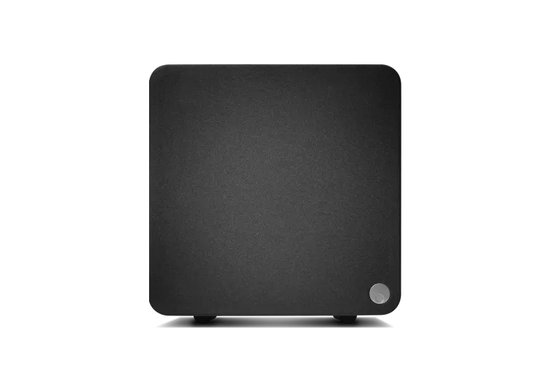
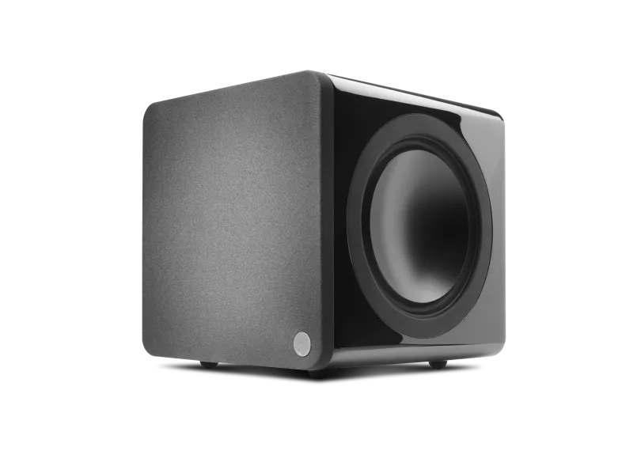
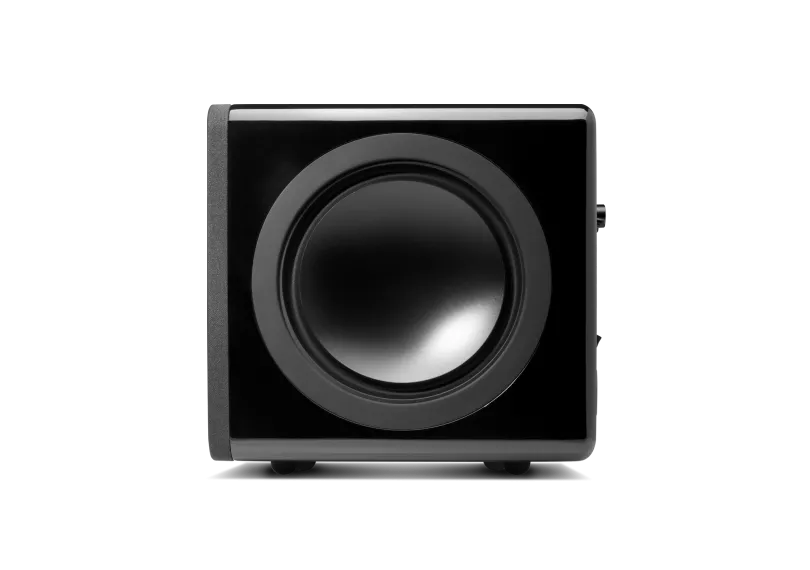
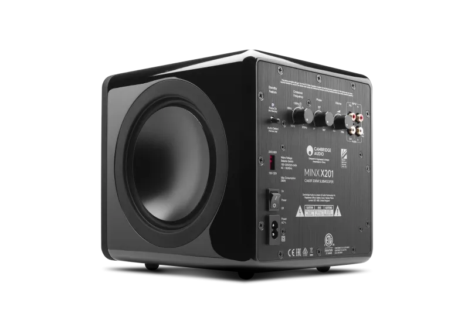
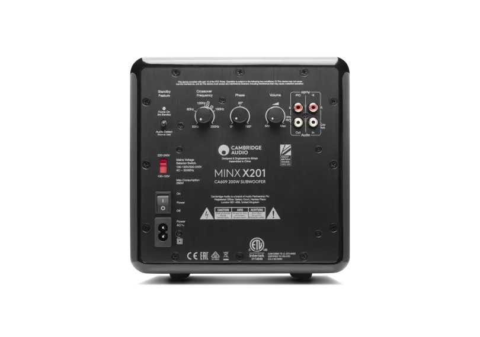
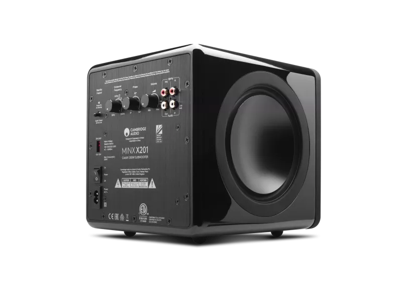
Minx X201
Minx X201は、コンパクトでスタイリッシュなエンクロージャーに、深くコントロールされた低音を実現します。200Wデジタルアンプ、パワードドライバー、ツインABR（補助バスラジエーター）を搭載し、豊かでディテール豊かなローエンドを生み出します。Minxコンパクトスピーカーの理想的なパートナーです。
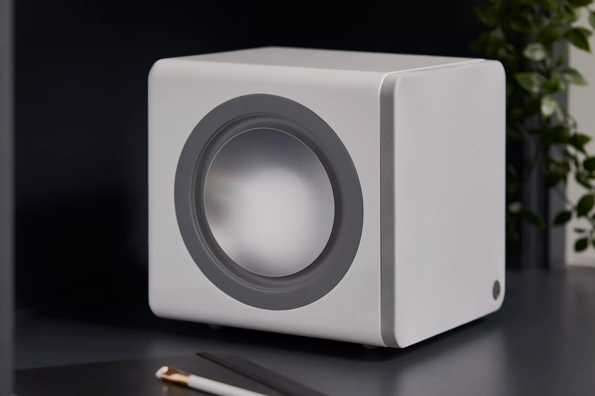
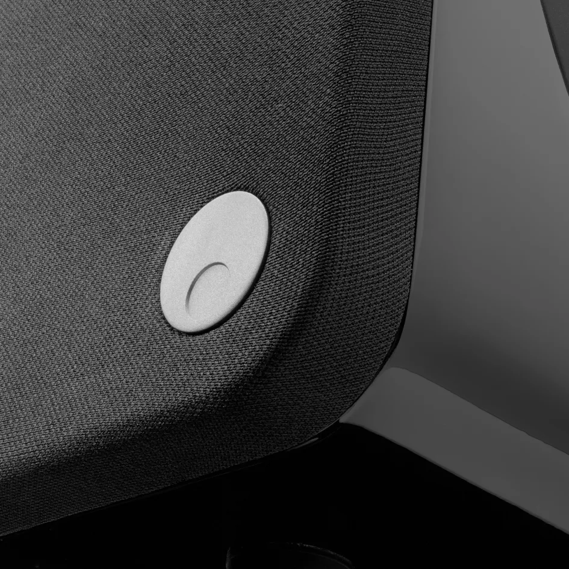
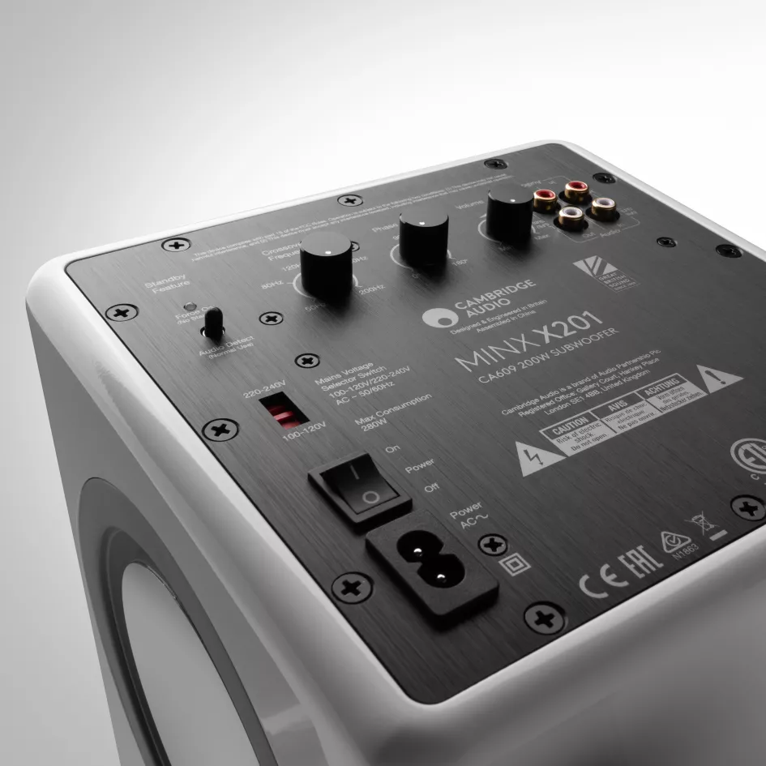
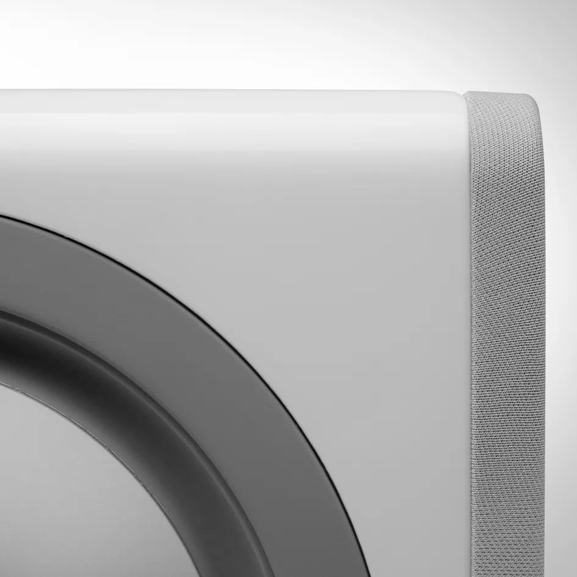
パワフルな低音、コンパクトなフットプリント
小さなスペースのために設計されたMinx X201は、200Wのコントロールされたパワーで、部屋を支配することなく深くインパクトのある低音を実現します。
革新的なドライバー設計
200mm（6.5インチ）パワードドライバーがABR（補助バスラジエーター）と連携し、大型キャビネットを必要とせず豊かでフルボディなバスを実現します。
精密チューニング
ボリューム、フェーズ、クロスオーバーの調整コントロールにより、X201はセットアップに合わせて微調整し、他のMinxスピーカーとシームレスにブレンドできます。
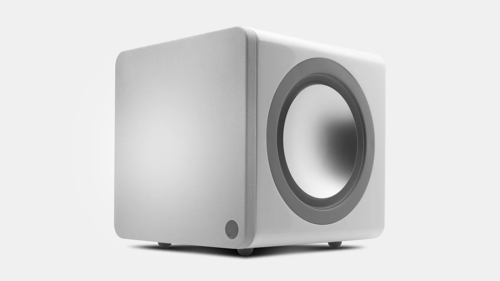
COMPACT POWER, EFFORTLESS INTEGRATION
コンパクトパワー、シームレスな統合
ボリューム、フェーズ、クロスオーバーの調整コントロールにより、X201はセットアップに合わせて微調整し、他のMinxスピーカーとシームレスにブレンドできます。
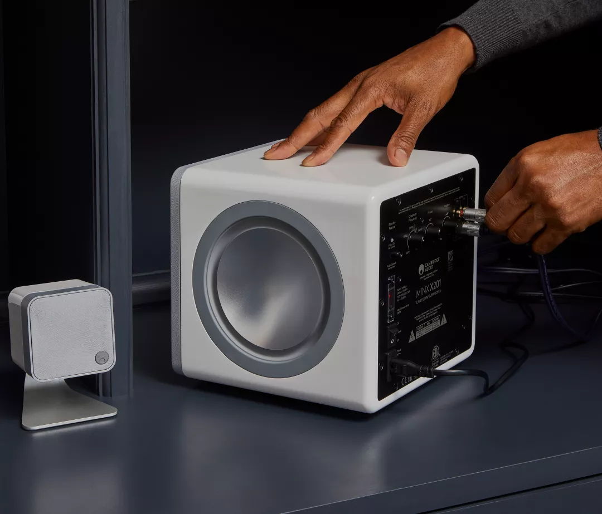
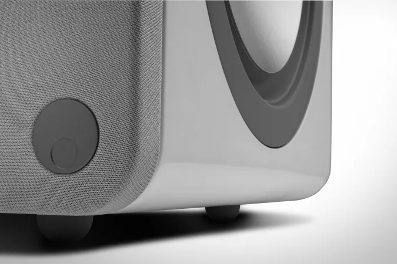
タイトな低音、部屋に優しいデザイン
200Wデジタルアンプ
パワフルな出力でタイトかつ歪みのない低音を実現。小～中規模の部屋に最適。
最適化ドライバー設計
200mm（6.5インチ）パワードドライバーとABR技術により、大型キャビネットなしで豊かなローエンドを確保。
先進のDSP
イコライゼーションとダイナミックレンジを管理し、より高い音量でも歪みを低減。
柔軟な設置とチューニング
ボリューム、フェーズ、クロスオーバーの調整コントロールにより、あらゆるシステムへシームレスに統合。
オートオンモード
オーディオ信号を検出すると自動電源ON、不使用時は自動OFFでエネルギー節約。
ハイグロスラッカー仕上げ
ブラックまたはホワイトで展開。耐久性のあるコーティングが傷やこすれに強く、どんな空間にもフィット。
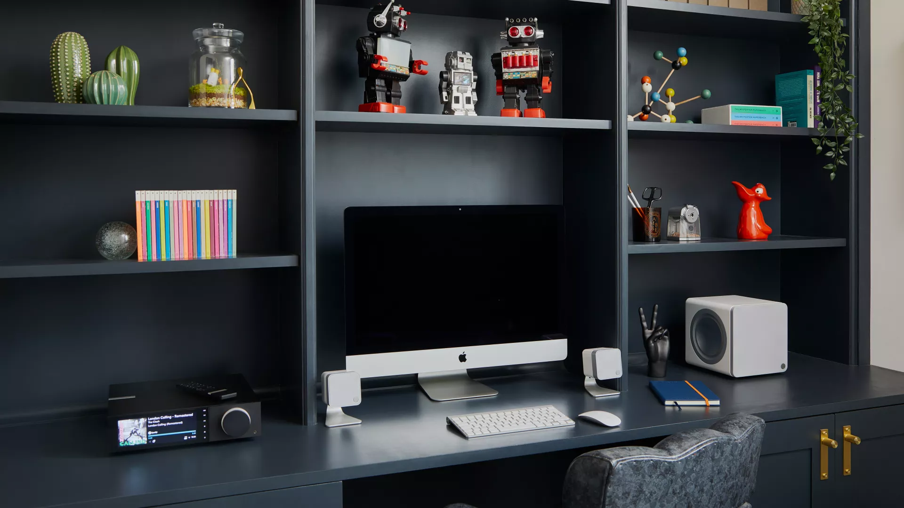
「Cambridge Audioは、オーディオ企業が明瞭さと音質をどこまで追求できるかの限界を押し続けています」